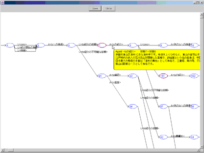
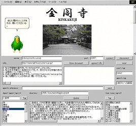

<!DOCTYPE HTML PUBLIC "-//W3C//DTD HTML 4.0 Transitional//EN">
<html lang="ja">
<head>
<title>$BBPOC%(!<%8%'%s%H(B</title>
<meta http-equiv="Content-Type" content="text/html; charset=iso-2022-jp">
<style type="text/css">
<!--
a       {text-decoration:none;}
#link   {text-decoration:none;}
-->
</style>
</head>

<body bgcolor="#FFFFFF">
<p>Japanese / <a href="index-e.html">English</a></p>
<h1 align="center">$BBPOC%(!<%8%'%s%H(B</h1>
<h2>$B35MW(B</h2>
<p>$BBPOC;vNc$+$iBPOC%b%G%k$r3X=,$9$k$3$H$G!$BPOC%Y!<%9$G4Q8w0FFb$r9T$&%(!<%8%'%s%H$r9=C[$9$k!%K\%0%k!<%W$G$O!$4Q8w0FFb%(!<%8%'%s%H3+H/$KI,MW$J<!$N(B2$B%F!<%^$r?J9TCf$G$"$k!%(B</p>
<table width="100%" border="0">
  <tr>
    <td width="50%">
      <div align="center"></div>
      <div align="center">$B?^(B1 $BBPOC%b%G%k(B($BBPOC3+;O;~$N0lIt(B)</div>
    </td>
    <td width="50%"> 
      <h3>1. $B;vNc$+$i$NA2<!E*$JBPOC%b%G%k3X=,(B</h3>
      $B$"$kFCDj$N%?%9%/$NBPOC$r<}=8$9$k$3$H$O:$Fq$G$"$k$?$a!$(B $B0lEY$KB?NL$N3X=,%G!<%?$r=8$a$k$3$H$O$G$-$J$$!%$7$?$,$C$F!$<}=8$5$l$?BPOC;vNc$+$iBPOC%b%G%k$r3X=,$9$k>l9g!$;vNc$,A}2C$9$k$4$H$K$=$NETEY3X=,$9$kI,MW$,@8$8$k!%$7$+$7!$Kh2s3X=,$r$d$jD>$9$N$O%3%9%H$,$+$+$k$?$a!$A2<!E*$J3X=,$G$O:9J,$@$1$r3X=,$G$-$k$3$H$,K>$^$7$$!%(B<br>
      $BK\%F!<%^$G$O!$BPOC%b%G%k$H$7$F(BPDFA(Probabilistic DFA)$B$rMQ$$!$=>Mh8&5f$G$ODs0F$5$l$J$+$C$?(BPDFA$B$NA2<!E*3X=,%"%k%4%j%:%`$rDs0F$7!$$=$N8z2L$r=>Mh$N%"%k%4%j%:%`$HHf3S!&I>2A$9$k!%(B 
      <br>
    </td>
  </tr>
  <tr>
    <td width="50%">
      <div align="center"></div>
      <div align="center">$B?^(B2 WOZ$B%$%s%?%U%'!<%9(B</div>
    </td>
    <td width="50%"> 
      <h3>2. Wizard of Oz$BK!$rMQ$$$?%G%8%?%k%7%F%#$N4Q8w0FFb%(!<%8%'%s%H(B</h3>
      <p> $B;vNc$N<}=8$HBPOC%b%G%k$N3X=,$r7+$jJV$9$3$H$K$h$j!$=y!9$KBPOCG=NO$r3MF@$9$k4Q8w0FFb%(!<%8%'%s%H$r9=C[$9$k!%$3$N%(!<%8%'%s%H$N9=C[$O<!$N(B2$B$D$N%9%F%C%W$r7+$jJV$9$3$H$K$h$j9T$o$l$k!%(B</p>
      <ul>
        <li>Wizard of Oz$BK!$rMQ$$$?BPOC;vNc<}=8(B<br>
          $B0FFb%?%9%/$K4X$9$kBPOC$r(BWizard of Oz$BK!$rMQ$$$F9T$&!%:G=i!$%7%9%F%`$N?dO@7k2L$OEv$F$K$J$i$J$$$?$a!$B?$/$NH/OC$r(BWizard$B$,9T$&$,!$BPOC%b%G%k$,@.D9$9$k$K=>$$!$(BWizard$B$K$h$kJd=u$O$[$H$s$II,MW$J$/$J$k!%(B</li>
        <li>$B;vNc$+$i$NBPOC%b%G%k3X=,(B<br>
          $B>e=R$NBPOC%b%G%k3X=,%"%k%4%j%:%`$rMQ$$$F!$;vNc$+$i8=:_$NBPOC%b%G%k$r3X=,$9$k!%(B</li>
      </ul>
      <p>$BK\%F!<%^$G$O!$$3$l$i$N5!9=$rHw$($?(BWeb$B%Y!<%9$NBPOC%(!<%8%'%s%H$r<BAu$7!$5~ET$N4Q8w0FFb$r%F!<%^$K;vNc<}=8!$3X=,$r9T$&!%(B <br>
      </p>
</td>
  </tr>
</table>
<h2>$B%a%s%P!<(B</h2>
<blockquote> 
  <p>$B2,K\(B $B>;G7(B ($B5~ETBg3X(B) okamoto@kuis.kyoto-u.ac.jp</p>
  <p>$B;3Cf(B $B?.IR(B ($B5~ETBg3X(B) nobutosi@kuis.kyoto-u.ac.jp</p>
</blockquote>
<h2>$BH/I=O@J8(B</h2>
<ul>
  <li>
    Masayuki Okamoto, Yeonsoo Yang and Toru Ishida,
    ``Wizard of Oz Method for Learning Dialog Agents,''
    <em>International Workshop on Cooperative Information Agents
    (CIA-2001)</em>,
    M. Klusch and F. Zambonelli (Eds.),
    <em>Cooperative Information Agents V</em>,
    Lecture Notes in Artificial Intelligence 2182, pp. 20-25,
    Springer-Verlag, 2001.
  </li>
</ul>
<h2>$BO"Mm@h(B</h2>
<blockquote>
  <p>dialog-agent@lab7.kuis.kyoto-u.ac.jp</p>
</blockquote>
<h2>$B%j%s%/(B</h2>
<blockquote>
  <p><a href="http://www.lab7.kuis.kyoto-u.ac.jp/j-index.html">$B5~ETBg3XBg3X1!>pJs3X8&5f2J<R2q>pJs3X@l96(B 
    $B@PED8&5f<<(B</a></p>
  <p><a href="http://www.digitalcity.jst.go.jp/">$B2J3X5;=Q?66=;v6HCD(B $B%G%8%?%k%7%F%#8&5f%;%s%?!<(B</a></p>
</blockquote>
<p><a href="http://www.lab7.kuis.kyoto-u.ac.jp/laboratory/projects/dialog-agent/index.html">$BFbIt%Z!<%8(B</a> ($B%Q%9%o!<%I$,I,MW(B)</p>
</body>
</html>
